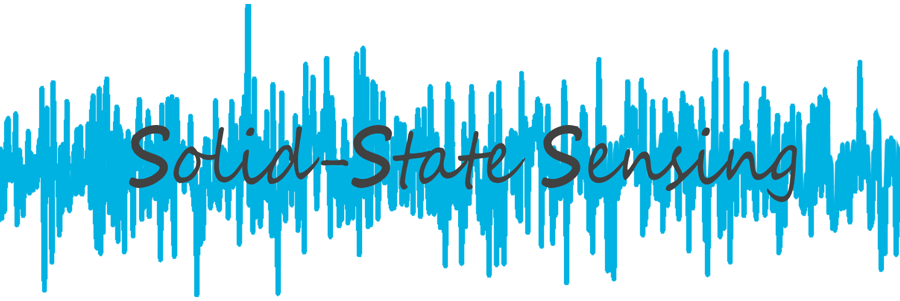

|
Hamad Bin Khalifa University College of Science & Engineering Manufactury Building, 338E Education City Doha, Qatar Email: bwang{at}hbku.edu.qa |
The HBKU Solid-State Sensing Laboratory led by Dr. Bo Wang focuses on the analysis, design, implementation and field verification of various circuits/systems for the Internet-of-Things (IoT) and in-vitro/vivo healthcare. Techniques covered in this group range from sensing, low power interface, data transmission to ultimate signal analysis. One focus of our group is to design innovative battery-less sensing system. Another focus of our group is to develop enabling technologies and miniaturized devices which bring benefits to people that are not accessible to regular medical screening. |